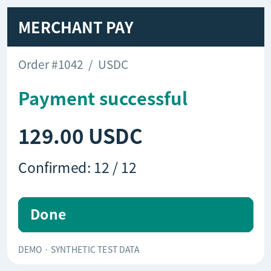

case-01 · 支付状态与下一步动作
单请求包含全部问题；三轮后端均值 168.2 ms
| 问题 | 预期 | 实际 | confidence / P(是) |
|---|---|---|---|
| status | completed | completed | 0.986 |
| next_action | confirm | confirm | 0.975 |
| paid | 是 | 是 | 0.937 |
查看请求问题和原始返回
{
"request": {
"state": "请根据所附截图中的可见内容回答问题。",
"questions": {
"status": {
"type": "choice",
"instructions": "截图显示的付款状态是什么？",
"criteria": {
"completed": "页面明确显示付款已成功完成",
"pending": "页面显示付款仍在处理中或等待确认",
"failed": "页面明确显示付款失败",
"unknown": "图片缺失、不可读，或没有足够信息"
}
},
"next_action": {
"type": "choice",
"instructions": "仅依据截图，客服下一步应如何处理？",
"criteria": {
"confirm": "付款已成功，告知客户该笔付款已完成",
"wait": "仍在处理中，等待确认，不重复付款",
"retry": "付款明确失败，提示检查原因后重试",
"review": "图片信息不足，要求提供清晰完整截图"
}
},
"paid": {
"type": "noul",
"instructions": "截图是否明确显示这笔付款已经成功完成？"
}
},
"images": [
"图片的 Base64 内容，见完整请求记录"
]
},
"response": {
"model": "strands-decider-2B-hobson-v19-vision",
"answers": {
"status": {
"type": "choice",
"choice": "completed",
"probabilities": {
"completed": 0.9898,
"pending": 0.005,
"failed": 0.0022,
"unknown": 0.0031
},
"confidence": 0.9864
},
"next_action": {
"type": "choice",
"choice": "confirm",
"probabilities": {
"confirm": 0.9815,
"wait": 0.0113,
"retry": 0.003,
"review": 0.0042
},
"confidence": 0.9754
},
"paid": {
"type": "noul",
"noul": 0.9366
}
},
"usage": {
"input_tokens": 476,
"output_tokens": 3
},
"latency_ms": 167.72
}
}